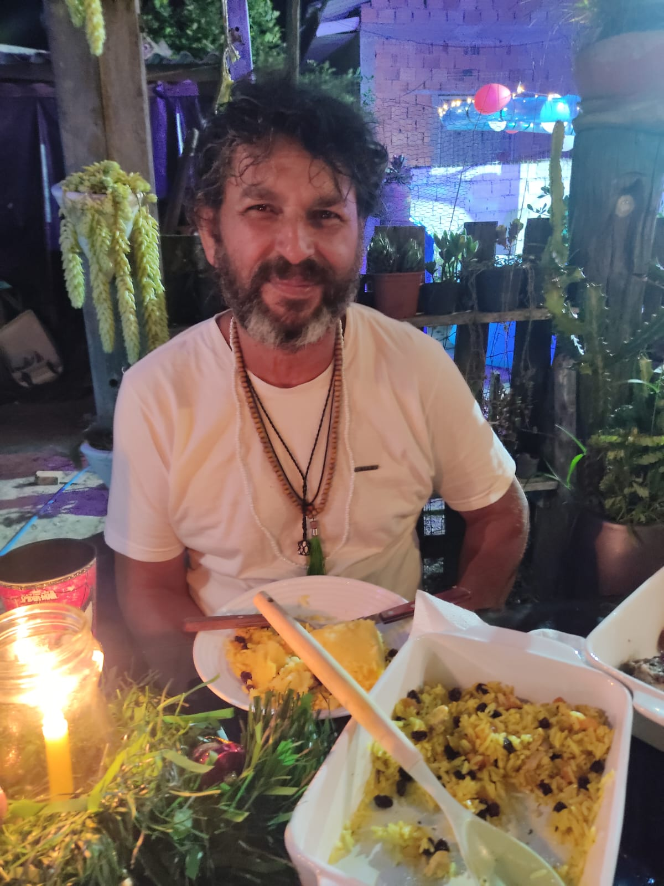

Palestra com Clóvis de Barros

Espaço de treino – iluminação azul

Espaço de treino – iluminação vermelha

Treino Chi Sau no Mook Yan Jong

Postura meditativa – altar e energia

Prática meditativa com alunos de Wing Chun

Treino de Wing Chun no boneco de madeira

Momento de refeição, partilha e espiritualidade